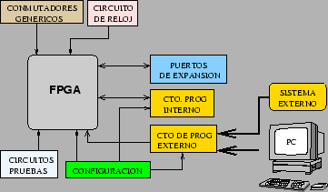
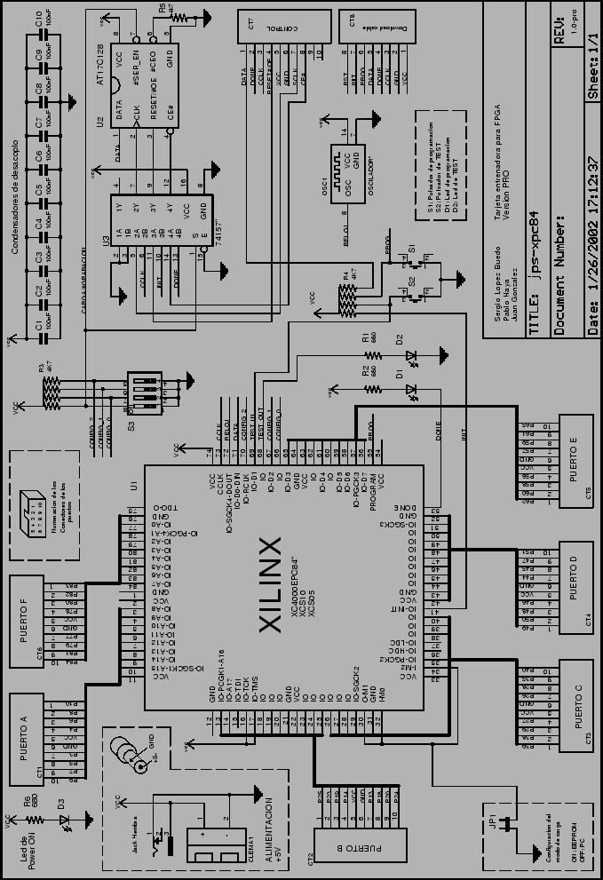

Next: 6 Campos de aplicación
Up: Tarjeta entrenadora para FPGA,
Previous: 4 Modos de funcionamiento
El diagrama de bloques se muestra en la figura 2.
El bloque principal lo constituye la FPGA, a la que se añade una circuitería
adicional, dividida en los siguientes bloques:
- Circuito de reloj, para la realización de diseños síncronos.
La frecuencia del oscilador empleado depende de la aplicación de usuario.
- Circuito de programación interno, constituido por la memoria
EEPROM serie y un multiplexor para que los pines de la EEPROM sean
accesibles bien desde la FPGA, para su carga, o bien desde los pines
del puerto de control para su programación in circuit.
- Circuito de programación externa, que permite descargar bitstreams
desde el PC o desde un sistema externo.
- Circuito de configuración: jumper y switch para la configuración
de los diferentes modos de trabajo. Mediante el jumper se pueden configurar
el modo de trabajo: entrenador o autónomo. Mediante un conmutador
se selecciona si la memoria EEPROM se conecta a la FPGA o al puerto
de control para programarla desde un sistema externo, sin tener que
sacarla del zócalo.
- Circuito de pruebas, constituido por un led y un pulsador
conectados a los pines P68 y P69 de la FPGA, que permiten probar el
correcto funcionamiento de la placa, configurando la FPGA con un diseño
de pruebas que los use, como por ejemplo un puerta inversora entre
ellos.
- Puertos de expansión. La placa incorpora 6 puertos de expansión,
con 8 bits de datos, configurables para entrada o salida, y dos pines
para la alimentación, de forma que los circuitos externos conectados
se puedan alimentar directamente a través de los cables de bus. Están
diseñados para ser compatibles con los conectores de la tarjeta GP-BOT[5]
y CT6811[3].
Figure 2:
Diagrama de bloques de la tarjeta JPS

|
Todos los detalles se pueden ver en el esquema de la figura 3
Figure 3:
Esquema de la placa JPS

|
Next: 6 Campos de aplicación
Up: Tarjeta entrenadora para FPGA,
Previous: 4 Modos de funcionamiento
Juan Gonzalez
2003-09-20